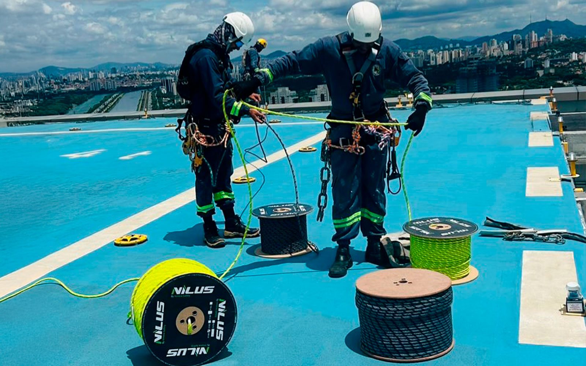

A Evolution Alpinismo Industrial oferece soluções de revestimentos protetivos que maximizam a durabilidade e valorizam suas estruturas, protegendo-as contra intempéries, corrosão e desgaste natural.
Higienização e segurança para reservatórios industriais e prediais em altura.

A limpeza de silos e caixas d'água em altura é um serviço de extrema importância para a saúde, segurança e qualidade dos produtos armazenados, sendo crucial para gestores de facilities em São Paulo. A Evolution Alpinismo Industrial oferece soluções completas de higienização e manutenção desses reservatórios, utilizando o alpinismo industrial para garantir acesso seguro, eficiente e em conformidade com as normas sanitárias e de segurança.
Nossa equipe especializada realiza a limpeza interna e externa de silos (grãos, cimento, químicos) e caixas d'água (potável, reuso), removendo resíduos, incrustações, mofo e bactérias. Com o acesso por corda, alcançamos qualquer ponto desses reservatórios, mesmo os de difícil acesso ou em espaços confinados, sem a necessidade de andaimes complexos, o que otimiza o tempo de execução e minimiza a interrupção das operações.
Remoção completa de resíduos, garantindo a qualidade e a segurança do material armazenado ou da água.
Utilizamos produtos específicos e seguros, especialmente para reservatórios de água potável, seguindo as normas sanitárias.
Nossos profissionais são treinados e equipados para operar com segurança em ambientes confinados, conforme a NR-33.
Profissionais com certificação IRATA e NR-35, garantindo um serviço de alta qualidade e segurança.
A limpeza de silos e caixas d'água para facilities em São Paulo com a Evolution é a garantia de um parceiro confiável para a manutenção da qualidade e segurança dos seus reservatórios. Além da limpeza, oferecemos também manutenção de telhados industriais e manutenção de tubulações em altura para uma gestão completa.

Ao terceirizar a limpeza de reservatórios em altura, sua empresa de facilities ganha:
Soluções seguras e inovadoras para serviços em altura.
Entre em ContatoRespostas para as perguntas mais comuns sobre nosso serviço de limpeza de reservatórios em São Paulo para gestores de facilities.